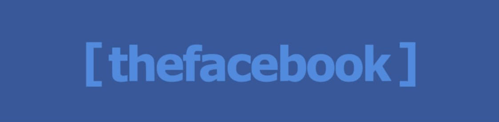

Apple Lisa

Året var 1982, og Apple lanserte en ny personlig datamaskin: Apple Lisa. Den ble påvirket av sin høye pris,
utilstrekkelig programvare og upålitelige Apple FileWare-floppydisker. Bare 10 000 enheter ble solgt på to
år og betraktet som en kommersiell fiasko. Til tross for dette ble Lisa en av Apples mest innflytelsesrike
feil. Det var en tid da flertallet av personlige datamaskinbrukere samhandlet med maskinene sine via
kommandolinjegrensesnitt. Apple Lisa var den første personlige datamaskinen med et grafisk brukergrensesnitt
og en mus. Denne teknologien tillot brukere å samhandle direkte med innholdet sitt på en måte som en
kommandolinje aldri tillot.
Yahoo
Yahoo var en av de tidligste og mest innflytelsesrike selskapene innen internettbransjen. Det ble grunnlagt
i 1994 av Jerry Yang og David Filo, to doktorgradsstudenter ved Stanford University. Selskapet startet som
en katalog over nettsteder, men utvidet raskt til å tilby en rekke tjenester, inkludert søkemotor, e-post,
nyheter, finans, sport og underholdning. På sitt høydepunkt i 2000 var Yahoo et av verdens mest verdifulle
selskaper, med en markedsverdi på over 100 milliarder dollar. Imidlertid led Yahoo av økende konkurranse fra
Google og andre selskaper, og ble også rammet av kontroverser og skandaler, inkludert brudd på personvern og
datainnbrudd. I 2017 ble Yahoo kjøpt opp av Verizon Communications, og siden da har Yahoo blitt integrert
med selskapets AOL-avdeling for å danne en ny enhet kalt Oath.
Napster
Napster var en banebrytende fildelingsplattform som oppstod på slutten av 1990-tallet og revolusjonerte
måten folk konsumerte musikk på nettet. Plattformen ble grunnlagt av Shawn Fanning, en college-dropout som
var frustrert over begrensningene til eksisterende musikkdistribusjonskanaler. I 1998 skapte Fanning den
første versjonen av Napster som en peer-to-peer (P2P) plattform som tillot brukere å dele musikkfiler med
hverandre direkte, uten behov for mellomledd som plateselskaper eller musikkbutikker. Plattformens
popularitet vokste raskt, og i 2000 hadde den over 20 millioner brukere over hele verden. Imidlertid førte
Napsters suksess også til rettslige utfordringer fra musikkbransjen, som anklaget plattformen for brudd på
opphavsrettigheter. De påfølgende rettslige kampene tvang til slutt Napster til å stenge i 2001, men dens
arv som en transformasjonskraft i musikkbransjen lever videre.
Wikipedia
.png)
Wikipedia ble grunnlagt i 2001 av Jimmy Wales og Larry Sanger. De to grunnleggerne hadde tidligere
samarbeidet om et lignende prosjekt kalt Nupedia, som hadde som mål å lage en online encyklopedi skrevet av
eksperter. Imidlertid viste det seg å være for langsomt og byråkratisk, så de besluttet å starte et nytt
prosjekt kalt Wikipedia. Wikipedia bruker en modell der brukerne kan bidra med og redigere innhold, og dette
har gjort det til en av de største og mest omfattende kilder til kunnskap på nettet. I dag er Wikipedia
tilgjengelig på over 300 språk og har mer enn 6 millioner artikler på engelsk versjon alene.
Facebook

Facebook ble grunnlagt i 2004 av Mark Zuckerberg, som da var student ved Harvard University. Opprinnelig var
nettstedet kun tilgjengelig for Harvard-studenter, men det ble gradvis utvidet til å omfatte andre
universiteter og til slutt alle med en e-postadresse. Facebooks opprinnelige formål var å la brukerne dele
informasjon og bilder med venner og familie, og det har siden utviklet seg til å bli en av verdens største
sosiale medieplattformer med over 2,7 milliarder aktive brukere per måned. Facebook har gjennom årene blitt
gjenstand for kontroverser, inkludert personvernsbrudd og spredning av desinformasjon, men det fortsetter å
være en viktig del av den digitale verdenen i dag.
YouTube
YouTube ble grunnlagt i 2005 av tre tidligere PayPal-ansatte: Chad Hurley, Steve Chen og Jawed Karim.
Opprinnelig var ideen bak nettstedet å lage en enkel måte for brukere å dele videoer med hverandre på
nettet. Det første videoen som ble lastet opp på nettstedet var av medgrunnleggeren Jawed Karim som besøkte
San Diego Zoo. YouTube ble raskt populært og vokste til å bli den ledende plattformen for deling av videoer
på nettet. I 2006 ble nettstedet kjøpt opp av Google, og har siden blitt en del av Alphabet Inc., Googles
morselskap. I dag er YouTube en av de mest besøkte nettstedene i verden, med en rekke innholdsskapere som
publiserer alt fra musikkvideoer til videoblogger, samt et bredt utvalg av brukergenerert innhold.
Spotify

Spotify ble grunnlagt i Stockholm, Sverige i 2006 av Daniel Ek og Martin Lorentzon. Ek og Lorentzon så en
mulighet til å skape en plattform som ville revolusjonere måten folk lyttet til musikk på nettet. Spotify
begynte som et gratis streamingtjeneste med annonseinntekter, men etter hvert ble det også mulig å abonnere
på en premium versjon uten annonser. Spotify har siden vokst til å bli en av verdens største og mest
populære musikkstrømmetjenester med over 356 millioner aktive brukere og over 70 millioner sanger
tilgjengelig i biblioteket. Spotify har også blitt kjent for sine personlige anbefalinger og spillelister
som er tilpasset hver enkelt bruker basert på deres lyttevaner og preferanser.
iPhone
iPhone ble lansert av Apple i 2007 og var den første smarttelefonen som var fullt utstyrt med
berøringsskjerm og en fullverdig nettleser. Lanseringen var et av de mest etterlengtede produktene i
teknologibransjen på den tiden, og markedet for smarttelefoner ble raskt endret som følge av iPhones
suksess. iPhone ble lansert med en rekke funksjoner som var banebrytende på den tiden, inkludert en
høyoppløselig skjerm, kamera, musikkspiller og evnen til å koble seg til internett via Wi-Fi og mobildata.
Siden lanseringen har iPhone-serien blitt en av de mest populære smarttelefonene i verden, og har også blitt
et symbol på Apples innovative og brukervennlige produkter.
Bitcoin og kryptovaluta

Kryptovaluta er en digital form for valuta som bruker kryptografi for å sikre og verifisere transaksjoner
samt for å kontrollere utgivelsen av nye enheter. Den mest kjente kryptovalutaen er Bitcoin, som ble lansert
i 2009, men det finnes nå tusenvis av ulike kryptovalutaer i omløp. Kryptovalutaer opererer utenfor
tradisjonelle finansinstitusjoner og kan brukes til å sende verdier direkte mellom personer uten behov for
en mellommann, som en bank eller finansinstitusjon. Kryptovalutaer har imidlertid vært gjenstand for mye
debatt og kontroverser, spesielt på grunn av den volatile naturen til prisene og bekymringer rundt sikkerhet
og kriminalitet. Likevel, mange ser på kryptovaluta som en disruptiv teknologi med potensial til å endre
måten vi ser på og bruker penger på i fremtiden.
Døden til Adobe Flash Player og Internet Explorer
Adobe Flash og Internet Explorer var to teknologier som dominerte internett i flere tiår, men begge har nådd
slutten av livssyklusen sin. Adobe Flash var en programvare som ble brukt til å levere animasjoner, videoer
og interaktive applikasjoner på nettet. Men på grunn av sikkerhetsproblemer og ineffektivitet i forhold til
nyere teknologier som HTML5 og JavaScript, har Adobe besluttet å avvikle Flash i 2020. På samme måte har
Internet Explorer, Microsofts gamle nettleser, nå blitt avviklet og erstattet av Edge-nettleseren. Internet
Explorer var en av de første nettleserne som ble utviklet for å bruke Internett, men har etter hvert blitt
avleggs og erstattet av mer moderne nettlesere som Google Chrome og Mozilla Firefox. Selv om Adobe Flash og
Internet Explorer har spilt en viktig rolle i utviklingen av internett, er det nå på tide å gå videre og
omfavne nyere teknologier som vil bidra til å skape et mer effektivt, sikkert og brukervennlig nett.
OpenAI og ChatGPT

OpenAI ble grunnlagt i 2015 av en gruppe teknologigründere og innovatører, inkludert Elon Musk, Sam Altman
og Greg Brockman, med målet om å utvikle avansert kunstig intelligens og bruke den til å forbedre
menneskeliv. OpenAI har siden blitt et av de ledende selskapene innenfor AI-forskning, og har utviklet flere
banebrytende AI-teknologier og tjenester.
En av OpenAIs mest kjente produkter er ChatGPT, en stor språkmodell som er trent opp på enorme mengder av
tekstdata. ChatGPT kan generere sammenhengende tekst som svar på en rekke ulike spørsmål og samtaler, og har
blitt brukt til å skape chatboter, tekstgenereringsverktøy og andre applikasjoner. ChatGPT har blitt et
viktig verktøy for bedrifter og forskere som ønsker å utnytte de enorme mulighetene som ligger i kunstig
intelligens og språkteknologi.
Fremtiden for AI og det neste store teknologiske fremskritet

Som en AI-modell kan jeg ikke spå fremtiden med absolutt sikkerhet, men jeg kan si at det er forventet at AI
vil fortsette å utvikle seg raskt i årene som kommer. Vi kan forvente at AI vil bli mer avansert, mer
tilpasningsdyktig og mer presis, og at den vil brukes til å løse stadig flere utfordringer og problemer i
samfunnet vårt.
En av de største utviklingene innenfor AI-teknologi vil sannsynligvis være fremveksten av autonome systemer
og roboter. Vi ser allerede bruk av autonome kjøretøy og droner, men det er forventet at vi vil se flere
autonome systemer i industrien, helsevesenet og andre sektorer. Samtidig vil det være økt fokus på å utvikle
AI-modeller som kan fungere på en mer menneskelig måte, ved å forstå naturlig språk, følelser og kontekst.
Det neste store teknologiske fremskrittet kan være knyttet til kvantecomputere og kvanteteknologi.
Kvantecomputere kan potensielt beregne og analysere data på en måte som dagens datamaskiner ikke kan, noe
som kan revolusjonere forskning og utvikling innenfor ulike felt. Vi kan også se økt bruk av
blockchain-teknologi, s pesielt i finanssektoren, og fortsatt utvikling av tingenes internett og smarte
byer.